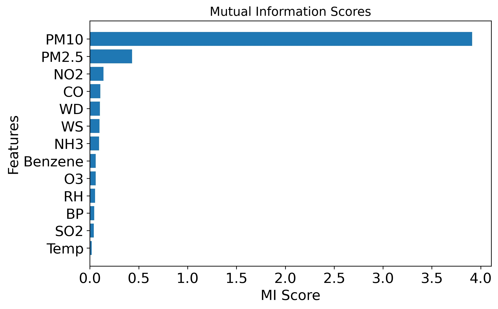
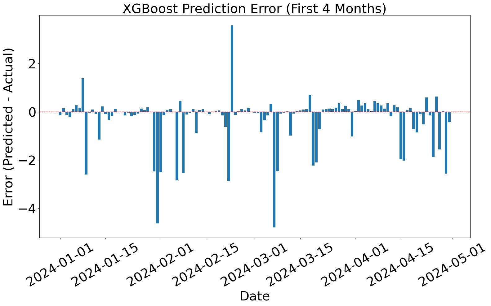
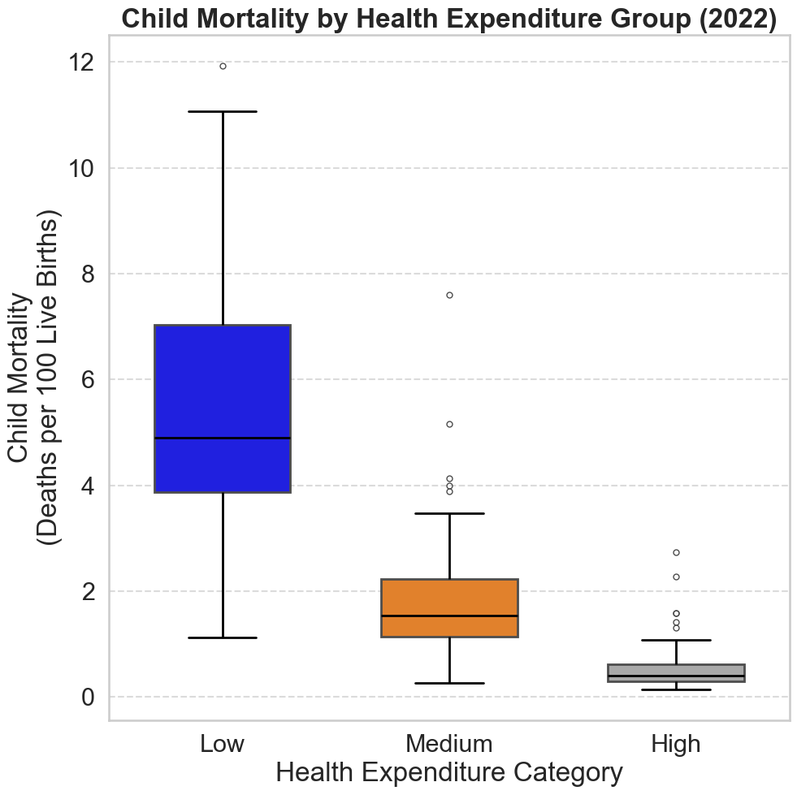
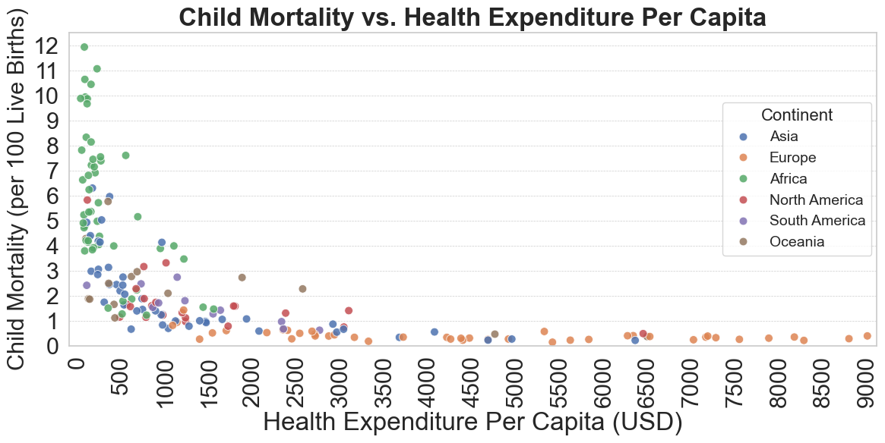
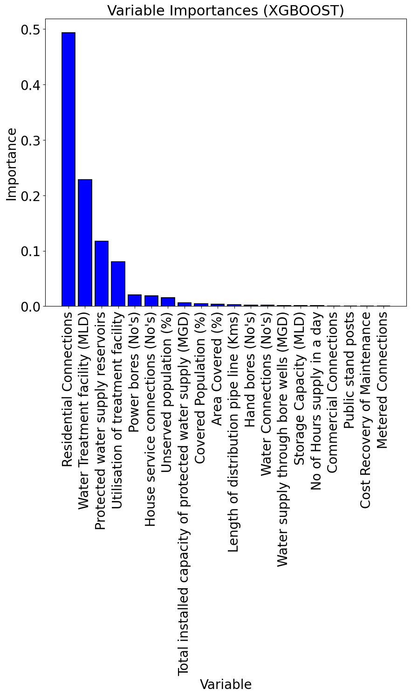
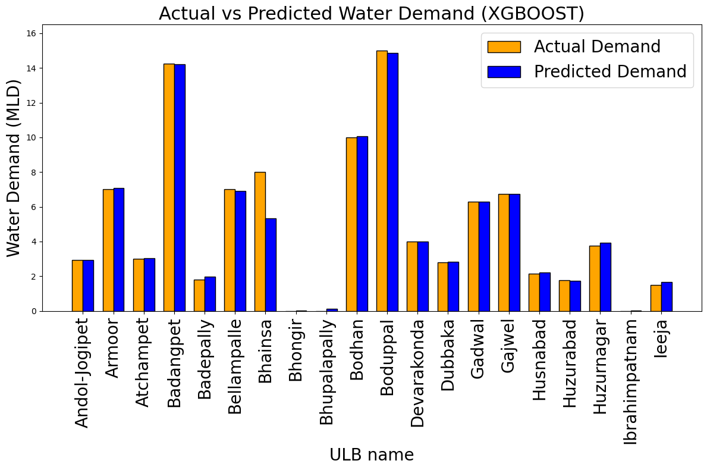

Kshitij Satish Mahajan
MBA candidate (Big Data Analytics) · Goa Institute of Management
MBA candidate with an undergraduate foundation in Data Science, bridging technical rigor and business decision-making. Author of three first-author IEEE-published papers spanning statistical hypothesis testing, ML regression, and a critical evaluation exposing a false-precision flaw in AQI forecasting models. Proficient in Excel, Python, SQL, and Power BI for end-to-end analysis.
Post Graduate Diploma in Management (Big Data Analytics)
Goa Institute of Management, Panjim, Goa 2026–2028
B.Sc. Data Science — CGPA 8.84
RV University, Bengaluru 2023–2026
Publications & Projects
Limitations of Predictive Modeling: Misleading Insights for AQI Forecasting
IITCEE · IEEE Xplore
AQI is deterministically derived from pollutant concentrations through a fixed CPCB sub-index formula, so near-perfect same-day accuracy reflects the models learning the dominant pollutant (PM₁₀) rather than any hidden atmospheric pattern. Introducing a genuine forecasting gap — 4-day and 7-day lags — on 366 days of 2024 Bengaluru air quality data exposes this.


| Model | MAE | MSE | R² |
|---|---|---|---|
| Random Forest | 0.63 | 13.77 | 98.12% |
| XGBoost | 0.60 | 5.25 | 99.28% |
| Model | MAE | MSE | R² |
|---|---|---|---|
| XGBoost (4-day lag) | 15.56 | 372.68 | 44.41% |
| XGBoost (7-day lag) | 15.98 | 522.67 | 50.34% |
| Random Forest (4-day lag) | 11.07 | 234.77 | 64.98% |
| Random Forest (7-day lag) | 10.52 | 351.91 | 66.56% |
Same-day MAE of ~0.60 regresses to 11–16 once a real forecast horizon is introduced — the near-perfect same-day fit was measuring the AQI formula, not the atmosphere.
Read on IEEE Xplore →Machine Learning & Statistical Methods for Evidence-Based Decisions: Child Mortality vs. Health Expenditure
ICEI · IEEE Xplore
Analyzed child mortality against per-capita health expenditure across 189 countries (Our World in Data, 2022), combining Welch's t-test and ANOVA with K-means and GMM clustering to validate an inverse, diminishing-returns relationship between healthcare investment and child survival.


| Statistic | Low Expenditure | High Expenditure |
|---|---|---|
| Mean (child mortality) | 5.39 | 0.58 |
| Standard deviation | 2.62 | 0.47 |
| Sample size | 63 | 64 |
High-expenditure countries lose roughly 1 in 10 as many children under five as low-expenditure countries. K-means and GMM clustering, run without being told the expenditure labels, independently recovered the same three-tier structure.
Read on IEEE Xplore →Sustainable Water Management: A Regression-Based Approach to Predicting Demand and Distribution
CSITSS · IEEE Xplore
Built XGBoost and Random Forest models on 2022 Telangana government water infrastructure data across 189 cities to predict water demand (MLD), validated through bootstrapping. XGBoost produced the lower prediction error despite Random Forest showing a marginally better statistical fit on training data.


| Model | MAE | R² |
|---|---|---|
| XGBoost | 0.91 | 91.78% |
| Random Forest | 1.69 | 93.81% |
Experience
Data Science Intern
Dhee Centre for AI and Data Science, Bengaluru Jun 2024
Applied XGBoost and Random Forest regression to a Telangana government water infrastructure dataset. The work was peer-reviewed and published as a first-author paper in IEEE Xplore (see Publications & Projects).
Certifications & Achievements
Community Service
Student Volunteer
Youth For Parivarthan NGO, Bengaluru 2025
Restored public spaces through cleaning and repainting drives, and led a book collection initiative for recycling and redistribution to government schools.